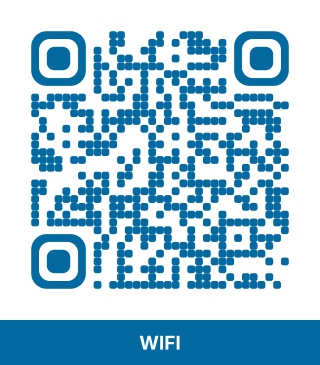
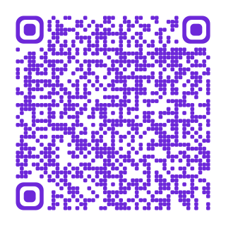
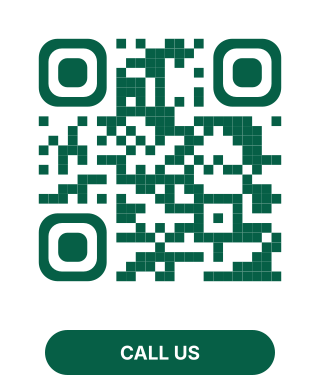
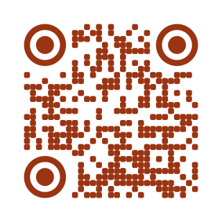
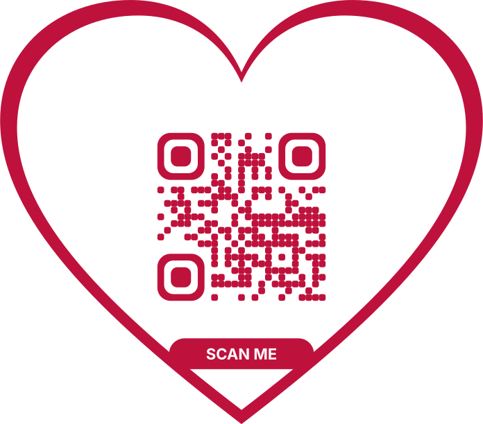

QR Code Examples to Scan and Test
Here are eight real QR codes. Point your phone camera at any of them to see what happens. Each example says what is stored inside and links to the tool that makes one like it.
Sample QR codes
All the examples are safe to scan. The phone number is in the 555-01xx range reserved for fiction, and the email addresses use the reserved example.com domain, so nobody real is contacted.
Website link
Opens a web page, here smartqrcraft.com.

WiFi
Offers to join the network Cafe_Guest (password Example2026).

Contact card
Saves the contact Alex Example to the address book.

Call
Shows a phone number with a call button. Nothing is dialled until you tap.

Opens a new email to hello@example.com with the subject Hello.
Text (hello)
Shows a short hello message on screen, even offline.

Heart design
The same technology in a heart frame, with a short message.
Blue QR code
A colored code that still scans, because the blue is dark enough.
What is inside each example?
A QR code only stores text. The start of the text tells the phone what to do with it.
| Example | Stored text |
|---|---|
| Website link | https://smartqrcraft.com |
| WiFi | WIFI:T:WPA;S:Cafe_Guest;P:Example2026;; |
| Contact card | BEGIN:VCARD ... END:VCARD with name, company, phone and email |
| Call | tel:+12025550147 |
mailto:hello@example.com?subject=Hello | |
| Text | The message itself |
Using the examples to test a scanner
The samples are handy for checking that a phone camera, scanner app or point-of-sale scanner reads QR codes. Scan them straight from the screen, or print this page. If a code fails, try moving back so the whole code with its white border fits in the frame. To check a code you made yourself, use the QR code tester.
Questions About the Examples
Yes. They are real and safe: the phone number is reserved for fiction and the email domain is a reserved example domain.
A square of black and white modules with three large squares in the corners, which scanners use to find the code.
Yes, the Text (hello) example shows a hello message when scanned.
Yes, as the heart and blue examples show. Keep the code dark on a light background so it scans.
Use them to test or to show how QR codes work. For real use, make your own code with your own details.